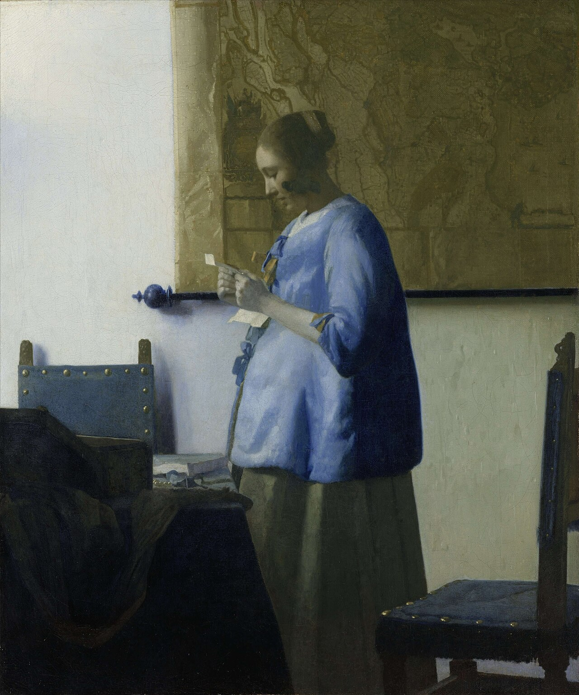

读信的蓝衣女子 Woman Reading a Letter
维米尔 · 约1663年 · 阿姆斯特丹荷兰国立博物馆
Johannes Vermeer · c. 1663 · Rijksmuseum, Amsterdam
图片：Wikimedia Commons，公有领域 / Image: Wikimedia Commons, public domain

发现 · Discover
晨光 Morning light
她在晨光里读信，身上还穿着蓝色的睡衣外套。
She reads in the morning light, still wearing her blue night jacket.
珍贵的蓝 Precious blue
这种明亮的蓝色是群青，用青金石磨成粉制成，在当时非常昂贵。
This brilliant blue is ultramarine, made by grinding lapis lazuli into powder, an expensive pigment at the time.
紧握的信 The letter
她用双手紧紧握着信。信里写了什么，维米尔没有告诉我们。
She holds the letter tightly with both hands. Vermeer gives no hint of what it says.
墙上的地图 The map
地图画的是荷兰与西弗里斯兰，是一张真实存在的地图，1620年由著名的地图出版商布劳出版。维米尔在别的画里也画过同一张。
The map shows Holland and West Friesland. It is a real map, published in 1620 by the famous mapmaker Willem Jansz Blaeu. Vermeer painted the same map in other works.
两道影子 Two shadows
地图挂钩的旋钮在墙上投下了两道影子，说明房间里可能还有第二个光源。
The knob of the map hanger casts two shadows on the wall, suggesting a second source of light.
蓝色的影子 Blue shadows
维米尔用淡灰色画她的皮肤，用浅蓝色画墙上的影子，这在当时很有创新。
Vermeer painted her skin with pale grey and the shadows on the wall with light blue, an innovative choice for his time.
故事 · The story
ACT I 第一幕 · 一封信 A letter
一个清晨，她还穿着睡衣外套，就站着读起了信。这封信大概来得很突然。只有她和写信的人，知道里面写了什么。
Early one morning, still in her night jacket, she stands reading a letter. It seems to have arrived unexpectedly. Only she and the writer know what it says.
约1663年 · 阿姆斯特丹荷兰国立博物馆 / c. 1663 · Rijksmuseum, Amsterdam
ACT II 第二幕 · 改了又改 Changed and changed again
2010至2011年，荷兰国立博物馆修复了这幅画，发现她的外套原本画得更宽，下面可能还有一圈毛领。维米尔后来把它改得更简洁了。
In 2010–11, the Rijksmuseum restored the painting and found that her jacket was originally wider, perhaps with a fur collar. Vermeer later made it simpler.
约1663年 · 阿姆斯特丹荷兰国立博物馆 / c. 1663 · Rijksmuseum, Amsterdam
ACT III 第三幕 · 第一幅 The first
这是荷兰国立博物馆收藏的第一幅维米尔，从1885年起就在这里展出。画上没有签名。
This was the first Vermeer in the Rijksmuseum, on display there since 1885. It bears no signature.
约1663年 · 阿姆斯特丹荷兰国立博物馆 / c. 1663 · Rijksmuseum, Amsterdam
只有她和写信的人知道信里写了什么。 Only she and the writer know what the letter says.
作品档案 · Artwork record
| 画家（生卒年） · Artist (dates) | 约翰内斯·维米尔（1632–1675） / Johannes Vermeer (1632–1675) |
|---|---|
| 画名 · Title | 读信的蓝衣女子 / Woman Reading a Letter (also known as Woman in Blue Reading a Letter) |
| 年份 · Date | 约1663年 / c. 1663 |
| 材质 · Medium | 布面油画 / Oil on canvas |
| 尺寸 · Dimensions | 46.5 × 39 cm |
| 收藏地 · Collection | 阿姆斯特丹荷兰国立博物馆（馆藏编号 SK-C-251） / Rijksmuseum, Amsterdam (SK-C-251) |
关于画家 · About the artist
约翰内斯·维米尔（1632–1675），荷兰画家，一生都在代尔夫特生活和创作。他留下的画作只有约35幅，以描绘室内的光线著称。
Johannes Vermeer (1632–1675) was a Dutch painter who lived and worked in Delft all his life. Only about 35 of his paintings survive, famous for their rendering of light in quiet interiors.
更多维米尔的画 · More by Johannes Vermeer